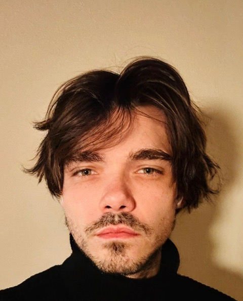
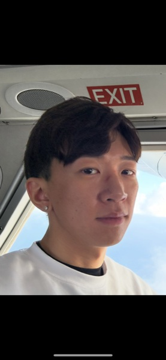
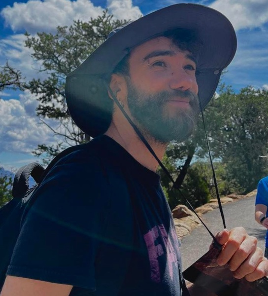
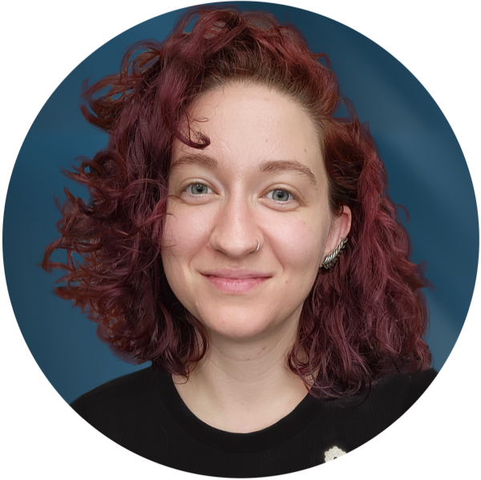

Postdoctoral Researchers

Dr. Anthony Taylor
Postdoctoral Fellow
JWST spectroscopy, with a focus on signatures of accreting supermassive black holes. Leads the VIP undergraduate research group.
Website →
Dr. Vasily Kokorev
NASA Hubble Fellow & CFC Prize Fellow
Many aspects of the early universe, from "little red dots" to some of the highest-redshift galaxies yet found.
Website →
Dr. Tiger Hsiao
CFC Prize Fellow
Joined the Cosmic Frontier Center in fall 2025, studying the earliest galaxies with JWST.

Dr. Katherine Chworowsky
Postdoctoral Fellow
Massive galaxies at high redshift. Showed that the abundance of massive galaxies in CEERS is consistent with ΛCDM given an evolving star-formation efficiency.
Earned her PhD in the group — also a group alumna.
Profile →
Dr. Pierluigi Rinaldi
CFC Prize Fellow
Early-universe galaxy evolution with JWST as part of the Cosmic Frontier Center.

Dr. Taylor Hutchison
CFC Research Associate
JWST studies of early star-forming galaxies within the Cosmic Frontier Center.